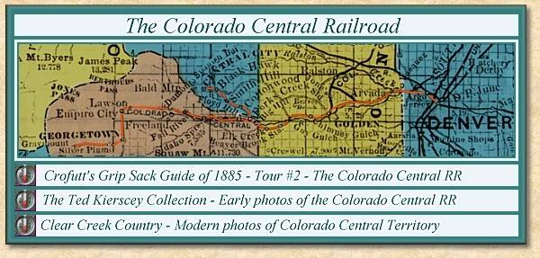

| The "Central" was the first railroad corporation in Colorado, having been organized in 1865. In 1868 10 miles of track had been constructed. In September, 1870, the broad gauge portion between Denver and Golden was finished, and in April of the same year work was begun on the division extending north to Longmont and west to Black Hawk, Central and Georgetown. The mountain portion of the "Central" was a three foot narrow gauge, commenced at the same time as the Longmont division, and completed September 1st, 1871, to the Forks, or the junction of North and South Clear creek, 13 miles from Golden, and in December following, up North Clear creek to Black Hawk, 36 miles from Denver. In March, 1873, the South Clear creek line was constructed to Floyd Hill, three and a half miles above the Forks and continued to Georgetown in the fall of 1876. In July, 1877, work was commenced on the extension from Longmont north and completed to a junction with the Union Pacific at Colorado Junction, six miles west of Cheyenne, in October of the same year, making the whole trackage of the "Central" 181 miles, of which 130 miles were of the broad and 54 miles narrow gauge. |

|
The Narrow Gauge Circle is written, maintained,and hosted by: Mark L. Evans Send Comments to:Mark L. Evans All original materials, text, and digital images Copyright © 1996-2004 Mark L. Evans. All rights reserved. Imitation is said to be the "sincerest" form of flattery.....Please don't flatter us without permission. |